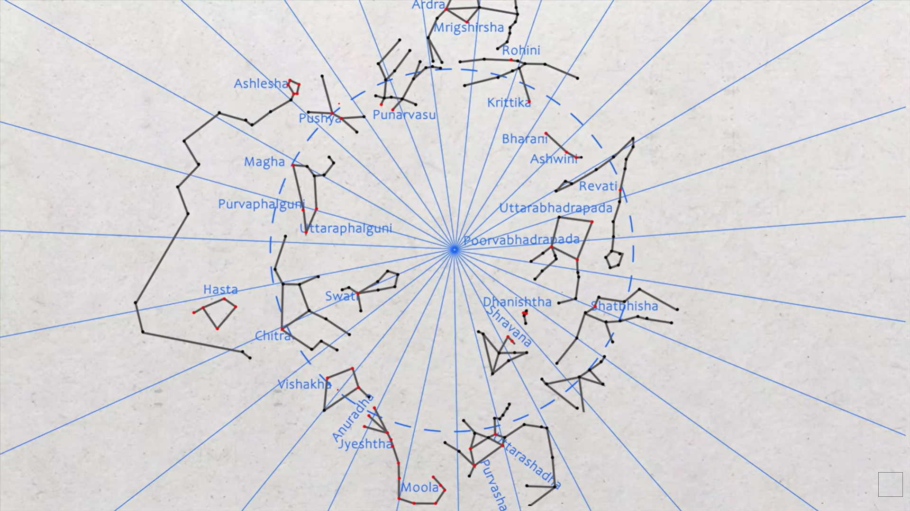
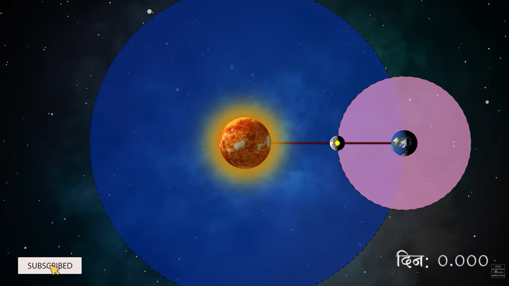
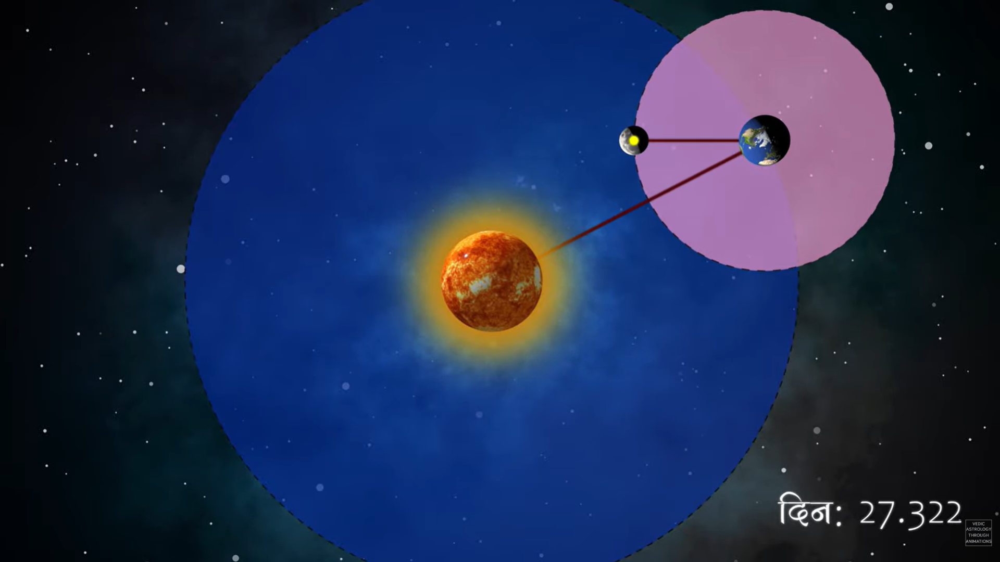
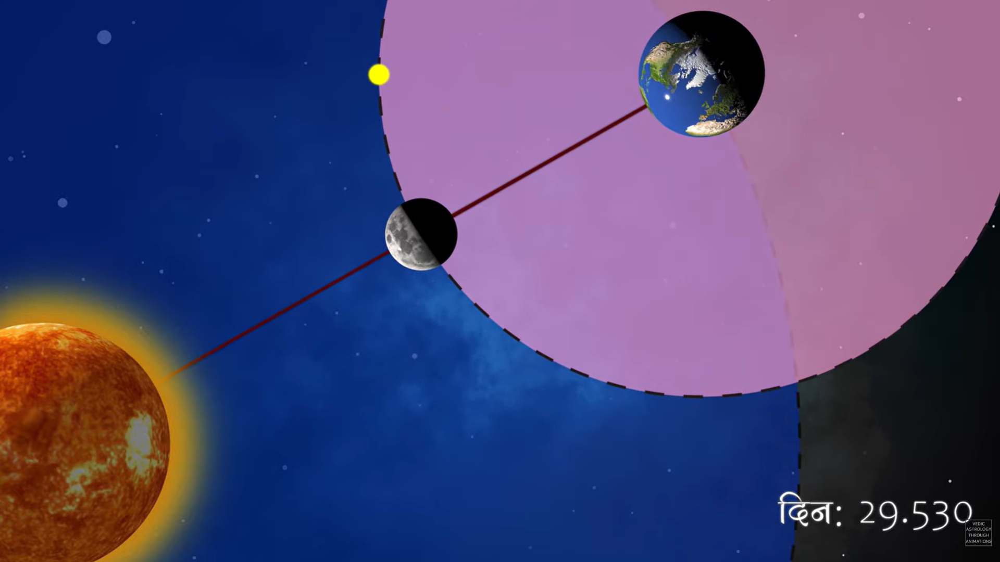
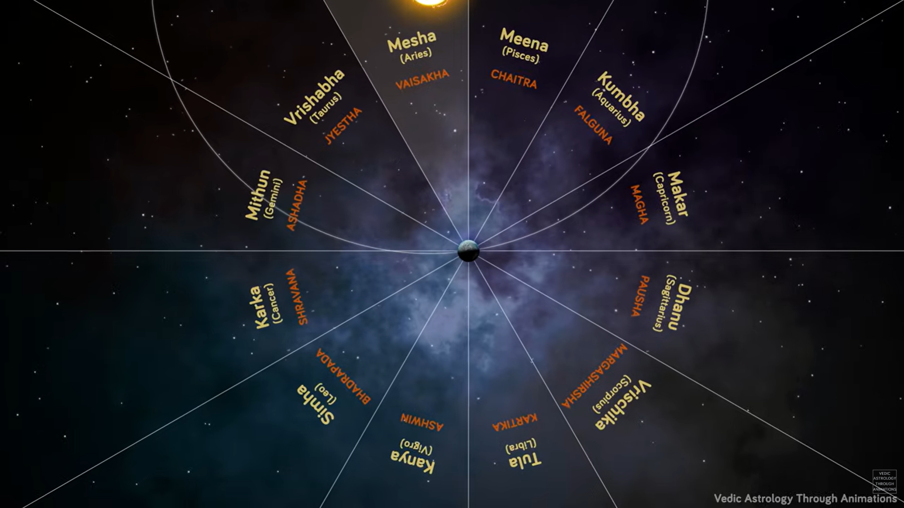
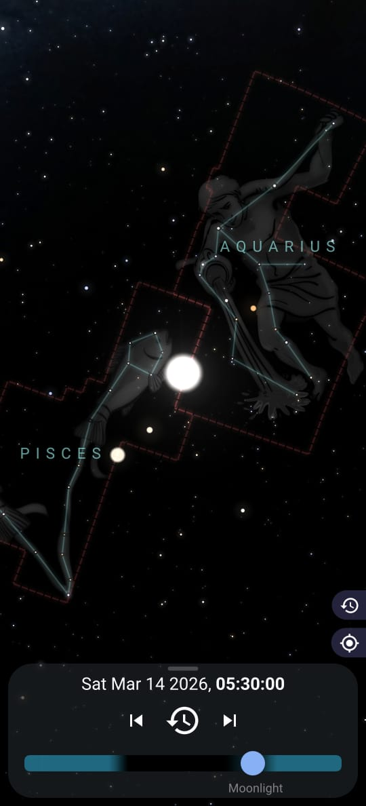
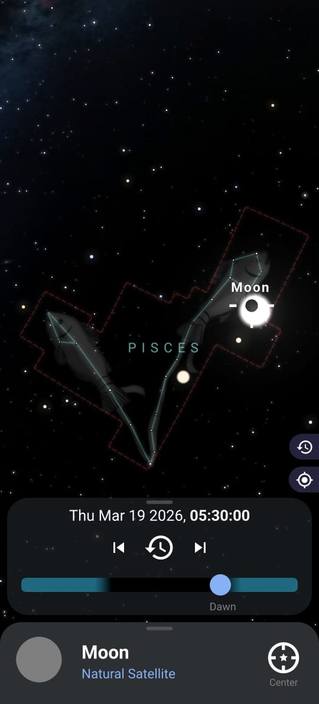
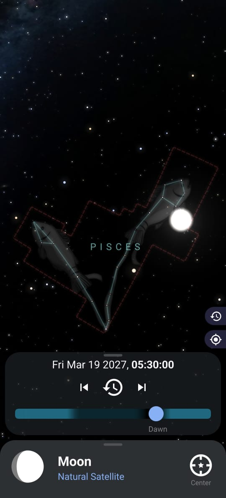
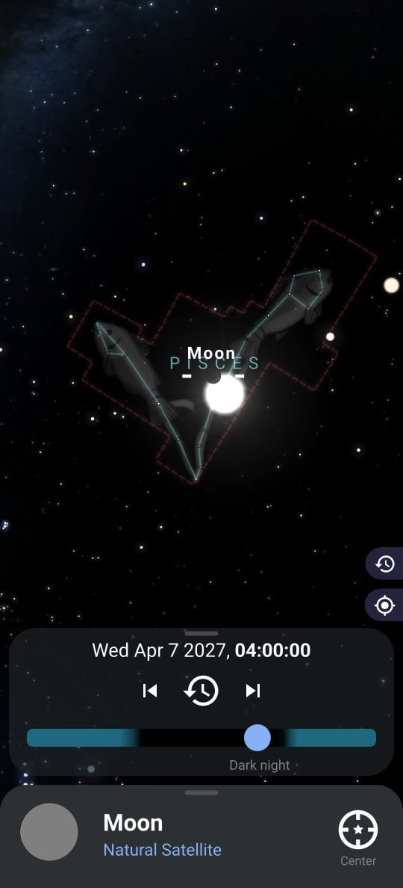
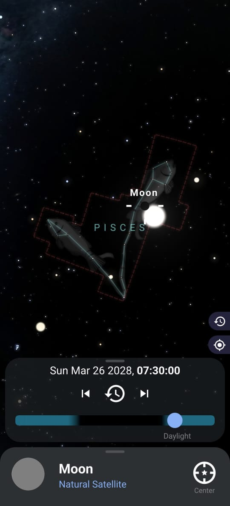

Gay Chhele
online


Today
আচ্ছা … পয়লা বৈশাখ কেন দোলে না?
Nyada
শুভ নববর্ষ babe! কি হাল?
10:00 ✓✓
Doi
শুভ নববর্ষ! এই চলছে। বাসু এখনো ঝাঁট জ্বালাচ্ছে রোজ।
10:01
Doi
PhD টা শেষ হলে বাঁচি।
10:01
Nyada
Sad babe!
10:02 ✓✓
Nyada
হুঁ। কি করা যায়!
10:04
Nyada
তুমি বলো babe, কোনো hot ছেলে propose করলো?
10:04
Doi
না babe! Jindegi jhand হয়ে আছে।
10:05 ✓✓
Doi
এদিকে paper টা হচ্ছে না ওদিকে AOT নিয়েও ব্যস্ত।
10:05 ✓✓
Doi
Btw babe, আমার Black Holes নিয়ে একটা talk আছে কালকে AOT তে।
10:06 ✓✓
Doi
I'm so excited! 😬
10:06 ✓✓
Doi
ওফ ন্যাদা এই তো এবার সব flaaat হয়ে যাবে!
10:08
Doi
আমাকে hot boys এর ছবি পাঠিও babe!
10:08
Nyada
ধূরর mostly বুড়া রা আসে! So unless you are into them
10:10 ✓✓
Nyada
I mean hot daddies are fine. আমি তো আর বান্টুর মতন pedo নয়!
10:10
বান্টু in the corner:- কোচি কোচি সুন্দর সুন্দর তরুণী … উমমাঃ
Nyada
কিইইই সব!
10:11 ✓✓
Doi
আচ্ছা babe babe! I had a question.
10:13
Nyada
বলে ফ্যালো babe!
10:14 ✓✓
Doi
আমি একটা জিনিস দেখছিলাম।
10:15
Doi
এই বর্গী গুলার New Year যাকে এরা "गुढी पाडवा" বলে, সেইটা every year oscillate করতে থাকে।
10:15
Nyada
Oscillate?
10:16 ✓✓
Doi
মানে যদি এই year এ गुढी पाडवा 19th March হয়ে then next year এ হয়তো সেটা 7th April হবে।
10:17
Doi
Next to next year it will be on 27th March.
10:17
Nyada
Right!
10:18 ✓✓
Nyada
ঠিক যেমন ধর দুর্গা পূজো প্রতি বছর oscillate করে।
10:18 ✓✓
Doi
Right!
10:19
Doi
কিন্তু তাহলে পয়লা বৈশাখ কেনো oscillate করে না জানো babe?
10:20
Nyada
হ্যাঁ babe it's veryyy interesting!
10:21 ✓✓
Nyada
আচ্ছা তার আগে তোমাকে আমি একটা জিনিস জিজ্ঞেস করি।
10:21 ✓✓
Nyada
আমাদের যে পিঠে পার্বণ হয়ে 15th January তে
10:22 ✓✓
Nyada
সেটাও oscillate করে না right?
10:22 ✓✓
Nyada
সেটা কেন জানো babe?
10:23 ✓✓
Doi
হ্যাঁ of course! It's same as মকর সংক্রান্তি right?
10:24
Nyada
হ্যাঁ
10:24 ✓✓
Doi
যা মনে পড়ছে, it celebrates the Sun leaving ধনু (Sagittarius) and entering মকর (Capricornus).
10:25
Doi
And পুরো India তে একি দিনে similar festival celebrate করে।
10:25
Nyada
Exactly, its a solar festival!
10:26 ✓✓
Nyada
যেহেতু সূর্য 365 দিন পরে একি যায়গায় ফিরে আসে, তাই the celebration date remains fixed.
10:27 ✓✓
Doi
ঠিক ঠিক। আমাদের stargazing team এ এইগুলো নিয়ে খুব আলোচনা হয়।
10:29
Nyada
Wow! তোদের কি ভালো friend circle ভাই।
10:30 ✓✓
Doi
না babe সব যায়গাই একই! এর মধ্যে ও অনেক বালের লোকজন আছে।
10:32
Doi
আবার ভালোও আছে।
10:32
Doi
যেমন ধর এই লালবাল এর ছেলে - পাণু the Great
10:33
Doi
পাণু বলছিল this festival is a telltale sign of the slow precession of Earth, কিন্তু I don't exactly remember how!
10:34
Nyada
Great না ছাই!
10:35 ✓✓
Nyada
মাল্টা thesis thesis করে কেটে পড়লো।
10:35 ✓✓
Nyada
আমার AOT Mumbai এর কি হবে! 😭
10:36 ✓✓
Doi
Zindagi jhandwa babe! কি করবা!
10:37
Nyada
সেই!
10:38 ✓✓
Nyada
সে যাই হোক, it is true যে precession এর most beautiful example এই festival টা।
10:39 ✓✓
Nyada
কিন্তু সে না হয়ে অন্য কোনো দিন আলোচনা করা যাবে।
10:40 ✓✓
Nyada
আপাতত এইটা মাথায় রাখ্ যে এইটা solar festival বলে date টা fixed!
10:40 ✓✓
Doi
Right আমি এটাই ভাবছিলাম babe, যে তাহলে হয়তো বাংলা calendar actually lunar নয় but solar.
10:42
Doi
কিন্তু সেটা হলে how come দুর্গা পূজো is oscillating?
10:42
Doi
This makes me think it must be a lunar calendar then!
10:43
Nyada
কিন্তু babe purely lunar calendar হলে অন্য problem হয়ে যাবে right?
10:45 ✓✓
Doi
কি রকম?
10:46
Nyada
Lunar calendar এ 12 টা মাস হয়ে। Each month starts with a New Moon and ends with the next one.
10:47 ✓✓
Doi
Correct!
10:47
Nyada
On an average, the month length is 29.5 days.
10:48 ✓✓
Nyada
তাহলে দ্যাখ total number of days in a lunar year equates to 354 days, which is 11 days shorter than a solar year!
10:50 ✓✓
Doi
Oh riiiiight! হ্যাঁ আমি এটা জানতাম।
10:51
Doi
আর বুঝেছি তুই কি বলবি।
10:51
Doi
Every lunar year যদি solar year এর থেকে 11 দিন করে পিছিয়ে যায়
10:52
Doi
Then এরম করতে করতে 10 solar years পরে, দুর্গা পূজো প্রায় 4 মাস পিছিয়ে যাবে।
10:52
Nyada
Absolutely!
10:53 ✓✓
Doi
Instead of celebrating দুর্গা পূজো in September, we will be celebrating it in May, গরমের মধ্যে!
10:54
Nyada
ভ্যাপসা গরম!
10:54 ✓✓
Nyada
Btw তুই probably জানিস but এই টাই হয়ে with most Islamic festivals.
10:55 ✓✓
Nyada
যেমন Eid-ul-fitr কখনো winter এ পড়ে, তো কখনো summer এ।
10:56 ✓✓
Doi
Exactly just বলতে যাচ্ছিলাম!
10:56
Nyada
হ্যাঁ।
10:57 ✓✓
Nyada
এই chart টা দ্যাখ তোকে পাঠাচ্ছি।
10:58 ✓✓
Nyada
It lists the Gregorian dates for Hijri (Islamic) New Year and Eid-ul-fitr from 2000 to 2020.
10:58 ✓✓
Drifting of Islamic festivals
| Hijri New Year | Eid-ul-fitr | Gregorian Year |
|---|---|---|
| 6 Apr | 8 Jan & 28 Dec | 2000 |
| 26 Mar | 16 Dec | 2001 |
| 15 Mar | 5 Dec | 2002 |
| 5 Mar | 25 Nov | 2003 |
| 22 Feb | 14 Nov | 2004 |
| 10 Feb | 3 Nov | 2005 |
| 31 Jan | 23 Oct | 2006 |
| 20 Jan | 13 Oct | 2007 |
| 10 Jan & 29 Dec | 1 Oct | 2008 |
| 18 Dec | 20 Sep | 2009 |
| 7 Dec | 10 Sep | 2010 |
| 26 Nov | 31 Aug | 2011 |
| 15 Nov | 19 Aug | 2012 |
| 4 Nov | 8 Aug | 2013 |
| 25 Oct | 28 Jul | 2014 |
| 14 Oct | 17 Jul | 2015 |
| 3 Oct | 6 Jul | 2016 |
| 21 Sep | 25 Jun | 2017 |
| 11 Sep | 15 Jun | 2018 |
| 31 Aug | 4 Jun | 2019 |
| 20 Aug | 24 May | 2020 |
Doi
Wow!
11:00
Doi
শালা মোসলা গুলো কোনো কোনো বছরে ২ টো করে New Year celebrate করে।
11:00
Doi
So unfair!
11:01
Nyada
Sed lyf bruh!
11:02 ✓✓
Doi
But হ্যাঁ I see your point. So it cannot be a purely lunar calendar.
11:03
Nyada
একদম!
11:04 ✓✓
Doi
আচ্ছা babe, can I quickly ask you a different question?
11:05
Nyada
Anytime baby!
11:06 ✓✓
Doi
You said আমাদের 12 টা মাস হয়
11:07
Doi
তাই তুই 29.5 কে 12 দিয়ে multiply করলি to get 354 days.
11:07
Doi
But 12 টাই মাস কেনো? Has it something to do with the Zodiacs?
11:08
Nyada
It's actually the opposite babe!
11:10 ✓✓
Nyada
The Egyptians and Babylonians discovered that there are a few numbers with a lot of divisors - like 12, 24, 30, 60, 180 and 360.
11:11 ✓✓
Nyada
Which is why they divided the sky into 12 Zodiacs each of 30°, divided each day into 24 hours, each hour into 60 minutes and so on.
11:12 ✓✓
Doi
Ohhh! That's very interesting!
11:13
Nyada
In fact, আমরা ভাবি আমরা decimal system use করি কারণ আমাদের হাতে 10 টা আঙুল আছে বলে।
11:14 ✓✓
Nyada
কিন্তু human fingers are also capable of using base 12.
11:15 ✓✓
Doi
Really?
11:15
Nyada
হ্যাঁ রে!
11:16 ✓✓
Nyada
তুই 2 টো finger crease এর মাঝামাঝি region গুলো enumerate করে দ্যাখ there are 3 regions in each finger.
11:17 ✓✓
Nyada
Considering only 4 fingers (leaving out the thumb which is used for counting), you get 12 such regions.
11:18 ✓✓
Nyada
enabling us to count in base 12!
11:19 ✓✓
Nyada
There's a similar way to use base 60.
11:20 ✓✓
Nyada
Point is, using these highly divisible base systems is much more natural than we think!
11:21 ✓✓
Doi
উফ ন্যাদা you're so smart baybbbb, just pawrrina নিতে!
11:23
Nyada
নিস না।
11:24 ✓✓
Doi
Swaag!
11:25
Doi
Okay then আমাদের calendar টা কি?
11:25
Nyada
আমি বাংলা calendar এ আসছি but before that, we should discuss Indian calendar. Let's consider Marathi calendar.
11:27 ✓✓
Nyada
And understand why गुढी पाडवा keeps oscillating instead of staying fixed or steadily drifting.
11:28 ✓✓
Doi
Cool!
11:30
Nyada
এক line এ যদি বলি, Indian calendar is a "lunisolar" calendar.
11:32 ✓✓
Nyada
মানে it is predominantly a lunar calendar, কিন্তু it is not independent of the solar movement.
11:33 ✓✓
Doi
Oh!
11:34
Nyada
Right!
11:35 ✓✓
Nyada
We start by defining 2 types of months:-
11:36 ✓✓
Nyada
- Solar Month: defined as the number of days the sun stays inside a zodiac.
- Lunar Month: defined using the solar month.
Doi
I think I understand the solar month.
11:38
Doi
যখন সূর্য একটা রাশি তে ঢুকছে তখন a particular solar month start হচ্ছে।
11:39
Doi
আর যখন সেই রাশি থেকে বেরিয়ে যাচ্ছে সেই solar month end হচ্ছে।
11:39
Doi
এইটা তো?
11:40
Nyada
Precisely babe!
11:41 ✓✓
Nyada
আকাশে 12 টা রাশি আছে - each spanning 30° - giving you the familiar 12 months of a year.
11:42 ✓✓
Doi
Perfect!
11:43
Doi
তাহলে lunar month কি defined by the Moon's revolution around Earth, যেমন Hijri Calendar এ হয়?
11:44
Nyada
না babe! Not directly.
11:45 ✓✓
Nyada
Actually most confusion এখানেই হয়।
11:46 ✓✓
Nyada
Lunar calendar এর lunar month আর lunisolar এর lunar month slightly আলাদা ভাবে defined.
11:47 ✓✓
Doi
অ্যাঁ!
11:48
Doi
2 রকম lunar month!
11:49
Nyada
Lunar calendar এর lunar month has nothing to do with solar months. Solar month defined ই নয়ে lunar calendar এ।
11:51 ✓✓
Nyada
But lunisolar calendar এর lunar month is defined both using lunar cycles and solar months.
11:52 ✓✓
Doi
Seems complicated!
11:53
Nyada
Once you know it, it's not that complicated.
11:55 ✓✓
Doi
Okay, explain to me like I'm a 5 year old!
11:57
Doi
কিন্তু তার আগে এটা বল, এই solar month এর নাম তো নিশ্চয়ই January February হবে না।
11:58
Doi
How are they named?
11:58
Nyada
Right! মাসের নাম গুলোর সাথে actually আমরা সবাই খুবই familiar:
12:00 ✓✓
Nyada
বৈশাখজ্যৈষ্ঠ
আষাঢ়
শ্রাবণ
ভাদ্র
আশ্বিন
কার্ত্তিক
মৃগশিরা (অগ্রহায়ণ)
পৌষ
মাঘ
ফাল্গুন
চৈত্র 12:01 ✓✓
Doi
Ahhhh😃! Wait অগ্রহায়ণ ই মৃগশিরা?
12:02
Doi
ও হ্যাঁ হ্যাঁ। মৃগশিরা মানে তো হরিণের মাথা!
12:03
Doi
হরিণ যেনো কে ছিলো? Orion বোধ হয়! কিন্তু অগ্রহায়ণ
12:04
Nyada
Wait wait babe ওটা পরে বলব!
12:05 ✓✓
Nyada
আগে বলি এই নাম গুলো এল কোথা থেকে। 😬
12:06 ✓✓
Doi
এগুলো নক্ষত্রের নাম না?
12:07
Nyada
এই পাণু টা সব excitement নষ্ট করে দিলো! মাল্টা আর কি কি বলেছে?
12:08 ✓✓
Doi
Just পাণু নয়, but হ্যাঁ I know নক্ষত্র is basically the same as Zodiacs except যে এরা much smaller.
12:09
Doi
They subdivide the Zodiacs and a few other constellations.
12:10
Doi
More importantly, everyday, the moon moves from one নক্ষত্র to another.
12:11
Doi
আমার কাছে একটা screenshot নেওয়া আছে নক্ষত্র গুলোর। তোকে পাঠাচ্ছি দ্যাখ।
12:12
Doi

Sky is divided into 27 Nakshatras.
Most of the Nakashatras are actually part of a Zodiac.
Ashwini and Bharani are parts of Aries.
Few outliers such as Mrigshirsha & Ardra that are parts of Orion - which isn't a Zodiac.
Each day, the Moon lies only in one Nakshatra.
12:13
Most of the Nakashatras are actually part of a Zodiac.
Ashwini and Bharani are parts of Aries.
Few outliers such as Mrigshirsha & Ardra that are parts of Orion - which isn't a Zodiac.
Each day, the Moon lies only in one Nakshatra.
Nyada
তুই জ্যোতিষী হয়ে যা বলছি শোন্, অনেক কামাবি!
12:15 ✓✓
Doi
না ওটা পাণু হবে।
12:16
Nyada
সেই!
12:16 ✓✓
Doi
And since the moon takes 27 days to undergo a complete revolution around Earth, there are 27 নক্ষত্র।
12:18
Nyada
কিন্তু babe didn't I tell you that New Moon to New Moon takes about 29.5 days?
12:19 ✓✓
Nyada
How come one complete revolution is only 27 days?
12:19 ✓✓
Doi
উউউ! I like that you are testing me কিন্তু babe I am also somewhat of an astronomer you know?
12:21
Nyada
Astrologer you mean!
12:22 ✓✓
Doi
Savage!
12:22
Doi
Basically যেটা হচ্ছে - the Moon takes 27 days to complete one revolution around Earth.
12:23
Doi
Had the Earth been still and not orbiting the Sun, তাহলে New Moon to New Moon length টাও 27 days ই হতো।
12:24
Doi
ছবিটা কিছুটা এরকম।
12:25
Doi

The Moon is in its অমাবস্যা phase - since it lies in between the Earth & the Sun.
The Moon makes a full turn around the Earth in about 27 days.
Had the Earth not moved from its position, it would have come back to its অমাবস্যা phase again.
This is Sidereal lunar month or নক্ষত্র মাস।
12:26
The Moon makes a full turn around the Earth in about 27 days.
Had the Earth not moved from its position, it would have come back to its অমাবস্যা phase again.
This is Sidereal lunar month or নক্ষত্র মাস।
Doi
কিন্তু যেহেতু Earth ও Sun কে orbit করছে
12:28
Doi
তাই যতক্ষণে Moon one revolution complete করছে, ততক্ষণে Earth একটু move করে যাচ্ছে।
12:29
Doi
তাই আবার New Moon হতে extra কিছু দিন লাগছে।
12:30
Doi
precisely speaking 2-2.5 দিন extra.
12:30
Doi


(Top) By the time the Moon makes a full turn around Earth, the Earth has also moved ahead.
(Bottom) The Moon needs to turn a little more to come back to its original অমাবস্যা phase. This extra turn takes roughly 2 more days.
This is called Synodic lunar month or তিথি মাস।
12:32
(Bottom) The Moon needs to turn a little more to come back to its original অমাবস্যা phase. This extra turn takes roughly 2 more days.
This is called Synodic lunar month or তিথি মাস।
Nyada
চুমু babe চুমু!
12:34 ✓✓
Doi
এই 27 days এর cycle টাকে "Sidereal Month" বলে।
12:35
Doi
আর এই 29.5 days এর cycle টাকে বলে "Synodic Month".
12:35
Doi
Hijri Calendar এর lunar month is this Synodic Month right?
12:36
Nyada
Right babe!
12:37 ✓✓
Nyada
Lunisolar calendar এর lunar month ও 29.5 days.
12:38 ✓✓
Nyada
তাই Indian calendar এর lunar month ও actually Synodic Month.
12:39 ✓✓
Doi
Oh আচ্ছা।
12:40
Nyada
Right!
12:41 ✓✓
Nyada
আর তাহলে এটাও বল্, 27 টা নক্ষত্রের মধ্যে শুধু 12 টাই কেন month name হলো?
12:42 ✓✓
Doi
এটাও Synodic আর Sidereal Month এর difference এর জন্য।
12:43
Doi
Wait babe, let me send you a chart I made. এটা দেখে দেখে বললে সুবিধা হবে।
12:44
Moon & the Nakshatras
| Moon's Phase | Underlying Nakshatra |
|---|---|
| পূর্ণিমা | বিশাখা |
| প্রতিপদ | অনুরাধা |
| দ্বিতীয়া | জ্যেষ্ঠা |
| তৃতীয়া | মূলা |
| চতুর্থী | পূর্ব আষাঢ়া |
| পঞ্চমী | উত্তর আষাঢ়া |
| ষষ্ঠী | শ্রবণা |
| সপ্তমী | ধনিষ্ঠা |
| অষ্টমী | শতভিষা |
| নবমী | পূর্ব ভাদ্রপদ |
| দশমী | উত্তর ভাদ্রপদ |
| একাদশী | রেবতী |
| দ্বাদশী | অশ্বিনী |
| ত্রয়োদশী | ভরণী |
| চতুর্দশী | কৃত্তিকা |
| অমাবস্যা | রোহিণী |
| প্রতিপদ | মৃগশিরা |
| দ্বিতীয়া | আর্দ্রা |
| তৃতীয়া | পুনর্বসু |
| চতুর্থী | পুষ্যা |
| পঞ্চমী | অশ্লেষা |
| ষষ্ঠী | মঘা |
| সপ্তমী | পূর্ব ফাল্গুনী |
| অষ্টমী | উত্তর ফাল্গুনী |
| নবমী | হস্তা |
| দশমী | চিত্রা |
| একাদশী | স্বাতী |
| দ্বাদশী | বিশাখা |
| ত্রয়োদশী | অনুরাধা |
| চতুর্দশী | জ্যেষ্ঠা |
| পূর্ণিমা | জ্যেষ্ঠা |
Nyada
দাদা দাদা, আমি পূর্ব আষাঢ় তিথি তে জন্মেছি আর আমার boyfriend মৃগশিরা তে।
12:48 ✓✓
Nyada
আমাদের মিলন শুভ হবে তো?
12:48 ✓✓
Doi
অবশ্যই বৎস!
12:49
Doi
খালি একটাই সমস্যা।
12:50
Doi
According to the Gay book of Astrology (Gastrology), হরিণের মাথা যদি কেউ আষাঢ় মাসে চিবায় তাহলে খুব gas হয়ে।
12:51
Doi
তাই তুমি কুণ্ডুর মুণ্ডু remaining 11 মাস ধরে চিবিও কেমন!
12:51
Nyada
Told you! তোর দ্বারাই হবে Astrology!
12:52 ✓✓
Doi
বাল!
12:53
Doi
এবার chart টা দ্যাখ একবার।
12:53
Nyada
হ্যাঁ বল।
12:54 ✓✓
Doi
Chart e I have assumed আজ পূর্ণিমা, আর চাঁদ আজকে বিশাখা নক্ষত্রের উপর আছে।
12:55
Nyada
বেশ।
12:56 ✓✓
Doi
Then কালকে চাঁদ next নক্ষত্রের উপর থাকবে, i.e., অনুরাধার উপর।
12:57
Doi
Similarly, তার পরের দিন চাঁদ জ্যেষ্ঠার উপর থাকবে।
12:58
Doi
এরম করে 27 দিন পর, চাঁদ আবার বিশাখার উপর ফিরে আসবে।
12:59
Nyada
Okay!
13:00 ✓✓
Doi
কিন্তু দ্যাখ 27 দিন পর, চাঁদ এখনো Full Moon হয় নি। সেটা হতে প্রায় 2 দিন বাকি।
13:01
Nyada
Right!
13:02 ✓✓
Doi
28th day তে চাঁদ আবার অনুরাধার উপর যাবে কিন্তু তখনো Full Moon হয়ে নি।
13:03
Doi
Finally, 29th day তে চাঁদ জ্যেষ্ঠার উপর যাবে, and now it's a Full Moon!
13:04
Nyada
Exactly!
13:05 ✓✓
Doi
তাহলে the initial Full Moon and the final Full Moon - both of these skipped অনুরাধা।
13:06
Doi
In fact if we keep doing this, we will see বছরের কোনো Full Moon ই অনুরাধা নক্ষত্রের উপর আসে না।
13:07
Nyada
Dayumm!
13:08 ✓✓
Doi
As if তুই জানিস না!
13:09
Doi
যাই হোক, similarly ওই 12 টা নক্ষত্র ছাড়া আর বাকি কোনো টার উপরেই Full Moon থাকে না।
13:10
Nyada
Babe তুমি এতো কবে থেকে জানলে babe?
13:12 ✓✓
Doi
হে হে!
13:13
Doi
তুমি জানো babe I went to the stargazing team as a speaker for the first time and I became a superstar overnight!
13:14
Doi
প্রায় 150 school students ছিল।
13:15
Doi
They even came to me for autographs!
13:16
Nyada
উফ babe you're so smart baybbbb, just pawrrina নিতে!
13:18 ✓✓
Doi
Don't worry babe তোমাকে দেবো না!
13:19
Nyada
Burrrn!
13:20 ✓✓
Doi
হে হে!
13:21
Doi
আচ্ছা babe, তাহলে কি এটা বলা যায়?
13:22
Doi
Full Moon যখন বিশাখার উপর থাকছে তখন বৈশাখ মাস।
13:23
Doi
Then after 30 days the Full Moon is on জ্যৈষ্ঠা।
13:23
Doi
তাই জন্য বৈশাখ এর পর জ্যৈষ্ঠ?
13:24
Nyada
Babe believe me I thought this was the case for soooo long!
13:26 ✓✓
Nyada
It's so tempting to believe so, and in fact the 2nd part is actually correct!
13:27 ✓✓
Nyada
বৈশাখ এর পর এই কারণেই জ্যৈষ্ঠ হয়ে।
13:28 ✓✓
Nyada
Also, তুই যদি বৈশাখ মাসের এর Full Moon কে দেখিস, you would find যে কোনো কোনো year এ, চাঁদ সত্যি বিশাখার উপরেই আছে।
13:29 ✓✓
Nyada
কিন্তু that usually isn't the start of বৈশাখ মাস।
13:30 ✓✓
Nyada
Surprisingly, কোনো কোনো year এ, বৈশাখ মাসের Full Moon কে তুই জ্যৈষ্ঠর উপর দেখবি।
13:31 ✓✓
Doi
এই ভাই কঠিন মনে হচ্ছে খুব।
13:32
Nyada
না রে দাঁড়া না! আর বেশি explain করতে লাগবে না।
13:33 ✓✓
Nyada
Okay, আমি তোর chart টা একটু modify করে পাঠাচ্ছি। তাহলেই অনেক টাই easy হয়ে যাবে!
13:35 ✓✓
Doi
পাঠা।
13:36
Nakshatra & its Antipodal Zodiac
| Nakshatra | Part Of (Nearest Zodiac) | Antipodal Zodiac |
|---|---|---|
| বিশাখা | Libra | Aries |
| জ্যেষ্ঠা | Scorpius | Taurus |
| আষাঢ়া | Sagittarius | Gemini |
| শ্রবণা | Capricornus | Cancer |
| ভাদ্রপদ | Aquarius | Leo |
| অশ্বিনী | Aries | Virgo |
| কৃত্তিকা | Taurus | Libra |
| মৃগশিরা | Taurus | Scorpius |
| পুষ্যা | Cancer | Sagittarius |
| মঘা | Leo | Capricornus |
| ফাল্গুনী | Leo | Aquarius |
| চিত্রা | Virgo | Pisces |
Nyada
আমি basically relevant নক্ষত্র গুলো রাখলাম এই list টায়।
13:39 ✓✓
Nyada
আর correspondingly কোন nearest zodiac এর part.
13:40 ✓✓
Nyada
But most importantly, 3rd column এ দ্যাখ আমি সেই zodiac টা লিখেছি যেটা exact opposite to the given নক্ষত্র।
13:41 ✓✓
Doi
Right perfect!
13:42
Nyada
Now I can immediately answer your question.
13:43 ✓✓
Nyada
How & why are the solar months named after নক্ষত্র?
13:44 ✓✓
Doi
I think I get it but go on!
13:45
Nyada
Right!
13:46 ✓✓
Nyada
As you might have guessed, Sun যখন Aries এ ঢুকছে, তখন Aries এর exact opposite নক্ষত্রের নাম বিশাখা।
13:47 ✓✓
Doi
তাই Sun Aries এ ঢোকা থেকে বেরিয়ে যাওয়া অবধি - এই solar month টার নাম হলো বৈশাখ।
13:48
Nyada
Precisely!
13:49 ✓✓
Nyada

The Zodiacs and their corresponding solar months.
13:50 ✓✓
Doi
এতো কঠিন করে করা কি দরকার ছিল?
13:52
Doi
Aries দিয়েই তো মাস টার নাম দিতে পারত!
13:53
Doi
কি যেন বাংলা নাম টা?
13:54
Nyada
মেষ রাশি।
13:54 ✓✓
Doi
Right!
13:55
Doi
Solar Month টার নাম মেষ ই বলতে পারত না?
13:56
Nyada
না babe that would cost a lot.
13:58 ✓✓
Nyada
প্রথমত, luni solar calendar এসেছে lunar calendar এর পরে।
13:59 ✓✓
Nyada
আর lunar calendar এ already 12 টা lunar month এর নাম ব্যবহার করা হয়ে গেছে।
14:00 ✓✓
Nyada
তাহলে তোকে a new dozen month নাম রাখতে হবে for the solar months!
14:01 ✓✓
Doi
That's true!
14:02
Doi
কিন্তু তাহলে এতো complicated ভাবে, zodiac টার opposite নক্ষত্র দিয়ে নাম করার কি দরকার?
14:03
Nyada
Because it's pretty reliable!
14:05 ✓✓
Nyada
Babe remind me, what is the position of the Moon wrt to the Earth and the Sun during a পূর্ণিমা?
14:06 ✓✓
Doi
Exactly opposite to the Sun.
14:07
Doi
মানে the Earth is between the Sun and the Moon যখন পূর্ণিমা হয়ে।
14:08
Nyada
Also, solar months & lunar months have roughly the same length.
14:09 ✓✓
Nyada
Approx 30 days, right?
14:10 ✓✓
Doi
ঠিক!
14:10
Nyada
Therefore, on an average, every solar month contains one and only one পূর্ণিমা।
14:12 ✓✓
Nyada
তাহলে যখন Sun Aries এ ঢুকছে
14:13 ✓✓
Doi
তখন the Full Moon (যেটা exactly opposite to the Sun)
14:14
Doi
Will lie on বিশাখা (যেটা exactly opposite to Aries)!
14:15
Nyada
Hence, the solar month is named বৈশাখ।
14:16 ✓✓
Doi
Sexy boyyy!
14:17
Doi
মানে সেই পূর্ণিমার চাঁদ যে নক্ষত্রে আছে সেই নক্ষত্রের নাম দিয়েই মাস start হল।
14:18
Doi
কিন্তু খুব ঘুরিয়ে পেঁচিয়ে!
14:19
Doi
I get it though. You had to include the Sun in the picture.
14:20
Nyada
সেটাই।
14:21 ✓✓
Nyada
If the Sun doesn't play any role, then your calendar becomes a lunar calendar and it starts drifting just like Hijri.
14:22 ✓✓
Doi
সেটাই।
14:23
Nyada
To sum it up
14:24 ✓✓
Nyada
যখন সূর্য Aries এ ঢুকছে তখন বৈশাখ মাস শুরু হচ্ছে, আর যখন Aries থেকে বেরচ্ছে তখন বৈশাখ মাস শেষ।
14:25 ✓✓
Doi
Correct!
14:25
Nyada
Any guesses কখন সূর্য Aries এ ঢোকে according to the English calendar?
14:27 ✓✓
Doi
Yeah it's 14th April right?
14:28
Doi
পয়লা বৈশাখ?
14:28
Nyada
Since this depends on the motion of the Sun, after a year, the Sun comes back to the same point.
14:30 ✓✓
Nyada
তাই বছর এর পর বছর, 14th April এই Sun Aries এ ঢোকে।
14:31 ✓✓
Doi
Which is why পয়লা বৈশাখ remains fixed.
14:32
Doi
অসাধারণ!
14:33
Nyada
14th April - 15th May এই period টা কে বৈশাখ মাস বলে।
14:35 ✓✓
Nyada
Remember this is a solar month. For clarity we might call it a "solar-বৈশাখ"।
14:36 ✓✓
Doi
Okay, let me guess
14:38
Doi
If I'm not wrong, just like "solar-বৈশাখ" there's a "lunar-বৈশাখ"।
14:39
Doi
"Solar-বৈশাখ" fixed থাকে kintu "lunar-বৈশাখ" oscillate করে।
14:40
Doi
আর এই "गुढी पाडवा" falls on the 1st of lunar-বৈশাখ।
14:41
Doi
Is this true?
14:42
Nyada
তুমি ‘খ’ পেয়েছো!
14:44 ✓✓
Doi
খ ?!
14:45
Nyada
You're almost correct except যে বর্গী দের new year 14th March - 14th April এর মধ্যে হয়।
14:47 ✓✓
Nyada
So it can't be "lunar-বৈশাখ" right?
14:47 ✓✓
Doi
ও right right, sorry I mean "lunar-চৈত্র"।
14:49
Nyada
Exactly!
14:50 ✓✓
Nyada
In a single sentence
14:51 ✓✓
Nyada
পয়লা বৈশাখ celebrates 1st of "solar-বৈশাখ", তাই ও fixed থাকে।
14:52 ✓✓
Nyada
गुढी पाडवा celebrates 1st of "lunar-চৈত্র", তাই ও oscillate করে।
14:53 ✓✓
Nyada
ঠিক যেমন দুর্গা পঞ্চমী is always on the 5th of "lunar-আশ্বিন", তাই ও oscillate করে।
14:54 ✓✓
Doi
I see!
14:56
Doi
তাহলে এই "lunar-চৈত্র" আর "solar-চৈত্র" এর difference বুঝলেই, I guess we are done!
14:57
Nyada
একদম।
14:58 ✓✓
Nyada
Let's use गुढी पाडवा directly as an example.
14:59 ✓✓
Doi
Sure!
15:00
Nyada
Indian calendar এ lunar month শুরু হয়ে অমাবস্যা দিয়ে আর শেষ হয়ে পরের অমাবস্যা তে।
15:02 ✓✓
Doi
Okay.
15:03
Nyada
Again babe
15:04 ✓✓
Nyada
If the Full Moon is in বিশাখা when the Sun is in Aries, where do you expect the New Moon was 15 days before?
15:05 ✓✓
Doi
Ummm, অমাবস্যা তখন হয় যখন Moon থাকে Sun আর Earth এর মধ্যে।
15:06
Doi
So the New Moon would lie opposite to বিশাখা, which I guess is Aries?
15:07
Nyada
Exactly!
15:08 ✓✓
Nyada
When the Sun enters Aries, New Moon is bound to be in Aries.
15:09 ✓✓
Doi
Perfect!
15:10
Doi
হ্যাঁ।
15:10
Nyada
এবার দেখে বল এই বছর गुढी पाडवा কবে হয়েছিল?
15:12 ✓✓
Doi
19th March.
15:13
Nyada
আর দ্যাখ Stellarium এর screenshot পাঠাচ্ছি।
15:15 ✓✓
Nyada
14th March এ সূর্য Pisces এ ঢুকছে। Pisces মানে চৈত্র মাস।
15:16 ✓✓
Nyada

Sun leaving Aquarius and entering Pisces on 14th of March. This date marks the beginning of the solar month Chaitra.
After every 365-ish days, the Sun comes back to the same point. Hence every year, the Sun enters Pisces on 14th March.
This date remains fixed year after year.
Note: This is not the "lunar-Chaitra".
15:18 ✓✓
After every 365-ish days, the Sun comes back to the same point. Hence every year, the Sun enters Pisces on 14th March.
This date remains fixed year after year.
Note: This is not the "lunar-Chaitra".
Doi
তো তাহলে solar-চৈত্র মাস start হচ্ছে 14th March এ।
15:20
Nyada
একদম।
15:21 ✓✓
Nyada
কিন্তু তখনো চাঁদ সূর্য থেকে পিছিয়ে ছিল।
15:22 ✓✓
Nyada
ঠিক 5 দিন পর 19th March এ চাঁদ সূর্যের সামনে এল।
15:23 ✓✓
Nyada
এই দিন অমাবস্যা। তাই এই দিন থেকে "lunar-চৈত্র" start হল।
15:24 ✓✓
Nyada

This New Moon marks the beginning of the lunar month Chaitra. This happens on 19th of March, when the Sun has already entered Pisces 5 days ago.
The "solar-Chaitra" has already begun while this "lunar-Chaitra" took 5 more days to begin.
Note: This event of the Moon coming in front of the Sun happens entirely inside Pisces - hence the lunar month is named lunar-Chaitra instead of (say) lunar-Vysakh.
15:26 ✓✓
The "solar-Chaitra" has already begun while this "lunar-Chaitra" took 5 more days to begin.
Note: This event of the Moon coming in front of the Sun happens entirely inside Pisces - hence the lunar month is named lunar-Chaitra instead of (say) lunar-Vysakh.
Doi
I presume যেহেতু এই Sun-Moon এর মিলন Pisces এর মধ্যে ঘটছে
15:28
Doi
তাই এটা "lunar-বৈশাখ" বা অন্য কোনো lunar month না হয়ে "lunar-চৈত্র" ই হলো।
15:29
Nyada
Precisely!
15:30 ✓✓
Nyada
এবার দ্যাখ ঠিক এক বছর পর, 19th March এ, সূর্য একি যায়গায় ফিরে আসবে।
15:32 ✓✓
Nyada
By that time, solar-চৈত্র already start হয়ে 5 দিন হয়ে গেছে।
15:33 ✓✓
Nyada
কিন্তু দ্যাখ এই দিনটা আর অমাবস্যা নয়।
15:34 ✓✓
Nyada

The Sun is back at the same spot a year later (19th March 2027), but the Moon is no longer in front of the Sun.
The Moon would have already appeared at this exact spot 11 days before, but the Sun wouldn't have been here yet!
15:36 ✓✓
The Moon would have already appeared at this exact spot 11 days before, but the Sun wouldn't have been here yet!
Doi
কারণ চাঁদ কে একি যায়গায় ফিরে আসতে 354 days লাগে। তাই ও already 11 দিন আগে একি যায়গায় এসে গেছিল।
15:38
Doi
By the time the Sun comes back to the same point, the Moon has already moved ahead.
15:39
Nyada
তাই জন্য on 19th of March 2027, lunar-চৈত্র তখনও start হয় নি।
15:40 ✓✓
Nyada
আর কিছু দিন পর আবার যখন চাঁদ সূর্যের সামনে আসবে, তখন start হবে lunar-চৈত্র।
15:41 ✓✓
Nyada
Stellarium এ দ্যাখ সেটা 7th April বলছে।
15:42 ✓✓
Nyada

The reunion of Sun and Moon happens on 7th April 2027, 19 days later than the previous year.
In 2027, the lunar-Chaitra begins on this day, which is 24 days after the solar-Chaitra.
15:44 ✓✓
In 2027, the lunar-Chaitra begins on this day, which is 24 days after the solar-Chaitra.
Doi
হ্যাঁ আর गुढी पाडवा 2027 is also on 7th April. Wow!
15:45
Nyada
Yep!
15:46 ✓✓
Nyada
By 7th April, solar-চৈত্র কিন্তু already 24 days হল start হয়ে গেছে
15:47 ✓✓
Nyada
কিন্তু lunar-চৈত্র just start হল।
15:48 ✓✓
Doi
Right!
15:49
Nyada
Finally, যদি তুই 2028 এ দেখিস, তখন তুই দেখবি गुढी पाडवा পিছিয়ে এসেছে।
15:51 ✓✓
Nyada
কারণ 2028 এ আবার Pisces এর মধ্যে সূর্য-চন্দ্রের মিলম ঘটছে March মাসে, specifically 26th March.
15:52 ✓✓
Nyada

The reunion of Sun and Moon now happens on 26th of March 2028, 12 days earlier than the previous year.
15:54 ✓✓
Doi
And this keeps happening year after year.
15:55
Doi
I see, so দুর্গা পূজো ও এই কারণেই oscillate করে?
15:56
Nyada
হ্যাঁ exactly এই কারণ এ।
15:57 ✓✓
Nyada
To conclude
15:58 ✓✓
Nyada
মারাঠা calendar এ, months গুলো lunar months, আর festival গুলো ও lunar festivals.
15:59 ✓✓
Nyada
বাংলা calendar এ, months গুলো solar months কিন্তু maximum festivals গুলো lunar festivals.
16:00 ✓✓
Doi
Wow babe! It was like an epiphany!
16:02
Doi
শুভ নববর্ষ☺️!
16:03
Nyada
শুভ নববর্ষ😄!
16:04 ✓✓